Quando acertar um ataque corpo a corpo, você pode fazer um ataque adicional ou uma manobra.


Ninguém sabe ao certo quando começou, mas todos sabem que o Hexatombe está cada dia mais perto. Os sinais já são vistos por quem tem sensibilidade suficiente: o ar fica pesado, as sombras parecem se mover sozinhas e sussurros começam a surgir onde deveria haver silêncio.
Os estudiosos do paranormal descrevem o Hexatombe como o fim da barreira, o momento em que o Outro Lado finalmente atravessa sem encontrar resistência. Alguns dizem que será como uma aurora negra rasgando o céu. Outros afirmam que o mundo simplesmente acordará diferente, tomado por fenômenos impossíveis.


 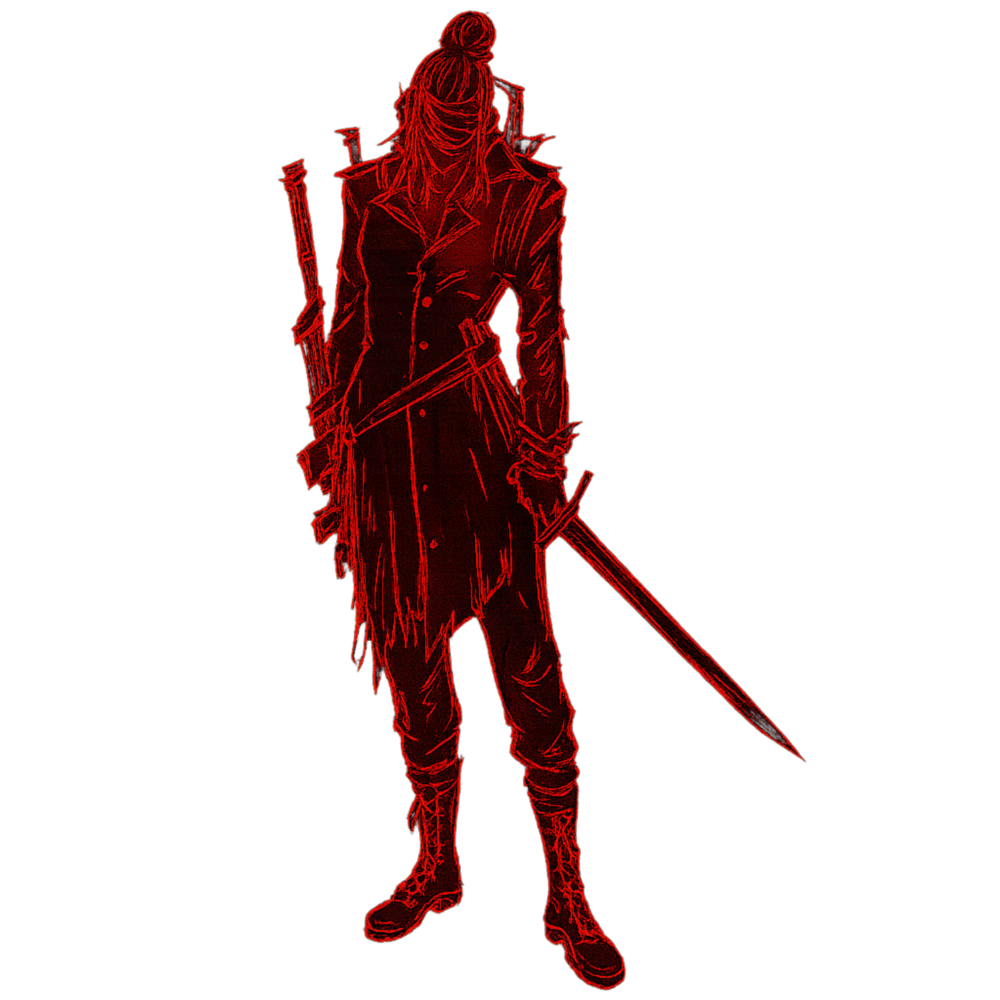
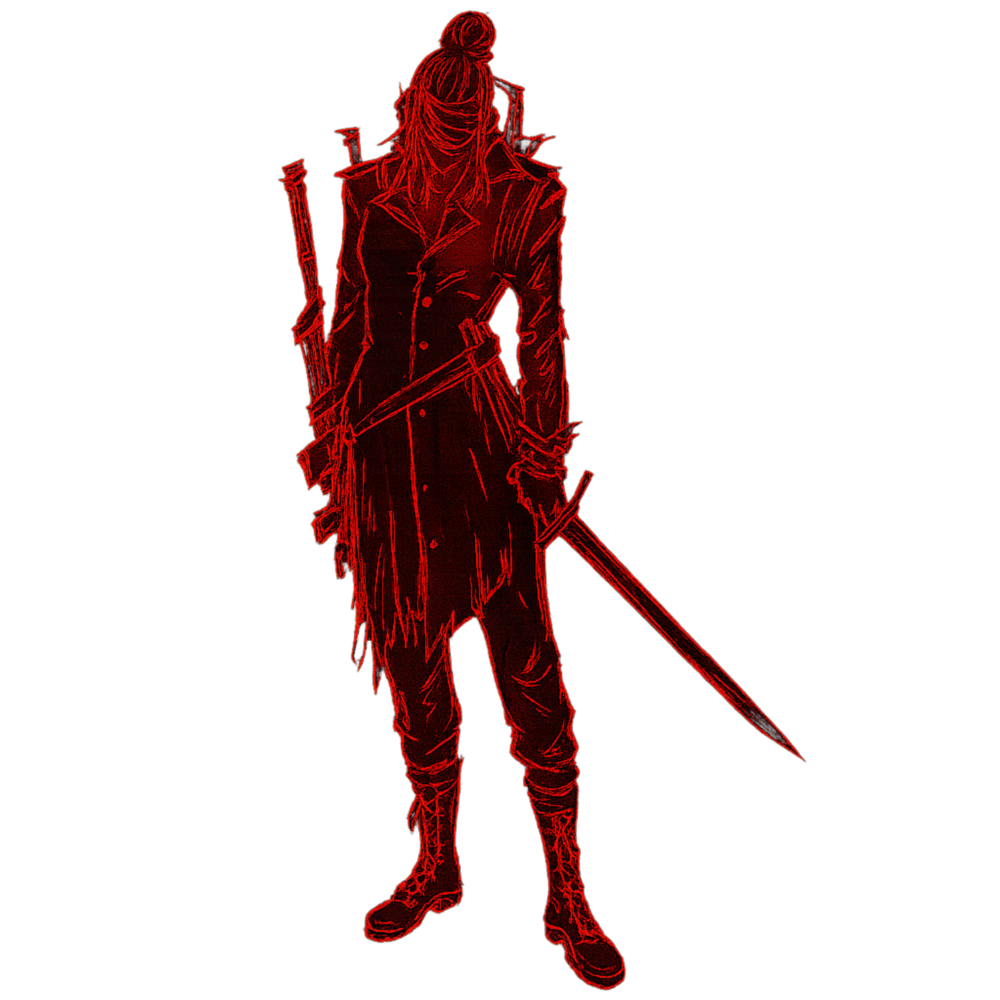
 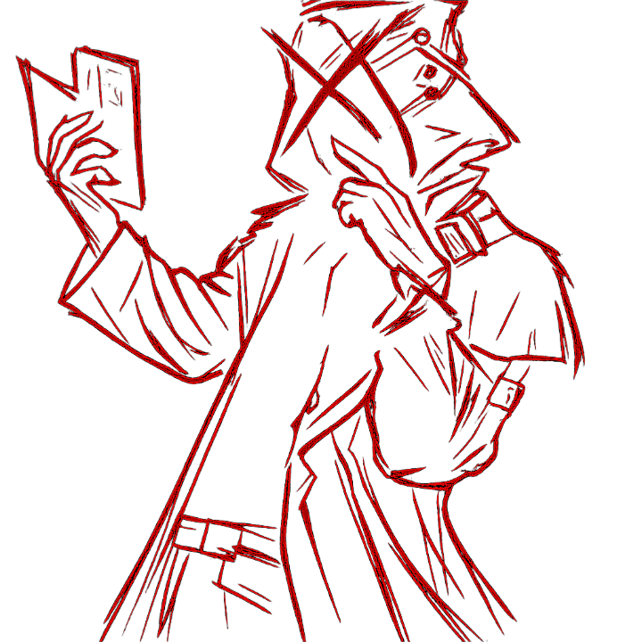
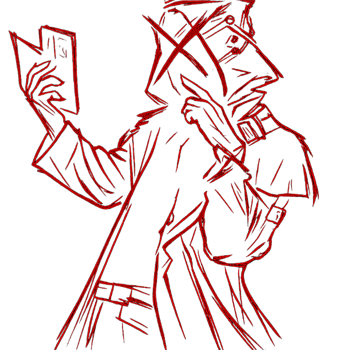
O que é o Hexatombe?
A Hexatombe… é difícil de explicar pra quem nunca sentiu ela de perto. Não é só um ritual, nem só um massacre — é uma brecha. Quando a Hexatombe acontece, o véu entre o nosso mundo e o Outro Lado se rasga, e tudo que devia ficar escondido começa a atravessar. O ar fica pesado, o tempo parece falhar, e coisas que não têm nome começam a olhar de volta pra você. Alguns cultos fazem isso de propósito, buscando poder. Outros tentam impedir, mas quase sempre tarde demais. A verdade é simples: quando você vê uma Hexatombe se formando… você entende que nada que conhece é seguro, e que a realidade não é tão sólida quanto parece.
Personagens

COLOSSO
O sangue poderia até pagar bem, mas para Dalmo, A glória era viciante.
GOLPE DE ARENA
3 PD
PRESSÃO ATMOSFÉRICA
3 PD
Se acertar um ataque você causa +1d10 pontos de dano de energia (+5) e o alvo fica atordoado por mais uma rodada.
MANOPLAS DO COLOSSO
Esse par de manoplas amaldiçoadas de energia faz com que cada soco seja acompanhado de pressão atmosférica demolidora. Elas causam +1d10 (+5) de dano de energia.
Dalmo / Colosso
Dalmo… ou como a maioria prefere chamar, “o Colosso”. Se você já viu ele de perto, sabe que esse apelido não é exagero — é aviso. Dizem que ele não nasceu forte: foi moldado. Cada marca no corpo dele carrega uma história que ninguém tem coragem de pedir pra ouvir. O Colosso é o tipo de homem que avança quando todos recuam, como se o medo não tivesse lugar dentro dele. Alguns juram que ele já enfrentou criaturas do Outro Lado sozinho e voltou vivo só por teimosia. Ele não fala muito, mas quando olha pra você, parece que está avaliando se você vai aguentar o que está por vir… ou se vai ser só mais um nome nas paredes de algum ritual. Se tem alguém que você quer do seu lado quando o impossível se aproxima, é o Colosso. E se ele estiver contra você? Então é melhor correr antes que ele perceba.
X
Ao encontrar no sangue o ideal da rebeldia, Jae matava porque podia.
ASSASSINATO FURTIVO
2 PD
Quando atinge um alvo desprevinido ou que você esteja flanqueando, você causa +3d8 (12) pontos de dano.
ZONA DOS SUSSURROS
3 PD
Marca uma área com "X". Nessa área, recebe +5 em testes de ataque, não sofre penalidade em furtividade após ações chamativas e melhora dano do assassino.
PUNHAL X
Quando atacar, você pode gastar 2PD para deixar o alvo desprevinido, se acertar o ataque, o alvo fica cego por 1 rodada.
Jae / X
Jae é o tipo de pessoa que você percebe antes mesmo de ouvir o nome. Tem um olhar que parece sempre seguir alguma coisa que ninguém mais enxerga. Dizem que ele foi marcado pelo Outro Lado cedo demais, e que desde então carrega uma ligação que nenhum ritual conseguiu cortar. Ele não é dos mais fortes fisicamente, mas compensa com uma precisão quase sobrenatural: Jae nunca desperdiça um movimento, nunca hesita. Alguns acreditam que ele escuta “chamados” durante os surtos de influência rituais, e que por isso sempre sabe para onde ir — como se estivesse seguindo um mapa invisível. Trabalhar com Jae é perigoso: você nunca sabe se está sendo guiado por instinto… ou por algo que usa ele como mensageiro. Mas se existe alguém capaz de encontrar uma saída no meio do caos, é ele. Ou pelo menos é isso que todo mundo espera.
KEMI
Kemi não se importa com ideal moral, Ela se importa com DINHEIRO.
PERITA
3 PD
Infos...
DISPARO DA MORTE
3 PD
Infos....
SNIPER DA KEMI
Infos....
Kemi / Kemi
A Kemi é o tipo de pessoa que muita gente subestima — e se arrepende depois. Ela carrega um silêncio estranho, não de quem é tímida, mas de quem ouve coisas. Coisas que você torce para nunca ouvir também. Há quem diga que a Kemi enxerga rastros do Outro Lado mesmo quando o véu está fechado. Ela não teme lugares escuros nem os símbolos que fazem outros perderem a sanidade. Na verdade, parece até confortável perto deles. É rápida, precisa e tem uma frieza que não vem da falta de emoção, mas de quem já viu demais. Alguns agentes acreditam que, se um dia o Hexatombe se abrir completamente, Kemi será uma das poucas que vai entender o que está acontecendo — talvez até antes de acontecer. Trabalhar ao lado dela dá segurança… mas também dá a sensação de que, em silêncio, ela sabe algo que você não sabe. E que talvez seja melhor assim.
MUTILADOR NOTURNO
Aguiar mentia para si mesmo que era a justiça, Mas ele matava por esporte.
ATAQUE ESPECIAL
3 PD
Gasta PD para receber um bônus de +5 no teste de ataque e na rolagem de dado.
PREDADOR DE SANGUE
3 PD
Memoriza o odor de uma vitima, recebendo +1D em testes para rastreá-la, percebê-la e atacá-la.
MACHADO DO MUTILADOR NOTURNO
Quando atinge uma vitima, você pode gastar 1PD para deixá-la sangrando (um ser sangrando perde 1d6 PV por rodada).
Aguiar / Mutilador Noturno
O Aguiar é o tipo de sujeito que não deveria estar vivo depois de tudo que já passou — mas está. E isso diz muito sobre ele. Ele não tem a força do Colosso, nem a sensibilidade ritual da Kemi, nem a precisão guiada do Jae. O que ele tem é algo mais simples… e bem mais perigoso: instinto de sobrevivência bruto, quase animal. Aguiar não recua, não congela, e não perde tempo tentando entender o que está olhando. Ele age. E, por algum motivo, essa impulsividade dele quase sempre leva ao resultado certo. Há rumores de que ele já encarou entidades do Outro Lado de frente, sem ritual, sem preparação, apenas com improviso e coragem. Nada glamuroso — só brutal. Os veteranos dizem que Aguiar não teme o Hexatombe… ou talvez ele tema tanto que aprendeu a atacá-lo antes que ele o engolisse. É difícil saber. O olhar dele é sempre firme, sempre calculando uma rota de fuga, sempre pronto para transformar qualquer coisa ao alcance em arma. Se você está numa situação impossível, cercado por criaturas que não deveriam existir, e alguém diz “o Aguiar tá vindo”… você respira um pouco mais aliviado. Mas também sabe que vai sobreviver porque ele decidiu sobreviver com você. E isso, no fim, é tudo que importa.
?
???
RAJADA CAÓTICA
3 PD
Você dispara um raio que causa 8d8(32) pontos de dano de Energia em um ser de alcance médio.
LABIRINTO MENTAL
3 PD
Com a mente presa em um labirinto, pelas próximas 1d4 rodadas, o alvo é obrigado a gastar suas ações para se mover em uma direção aleatória.
CAPTURAR MOMENTO
Você marca um local com um símbulo invisível, O símbulo capta imagens e sons proxímos dele. Você pode ver ou ouvir qualquer coisa captada pelo símbulo.
MAPA SANGUÍNEO
Você desenha um mapa com gotas de sangue que sinalizam em tempo real a localização de todos os seres em um raio de 1 km a partir de você.
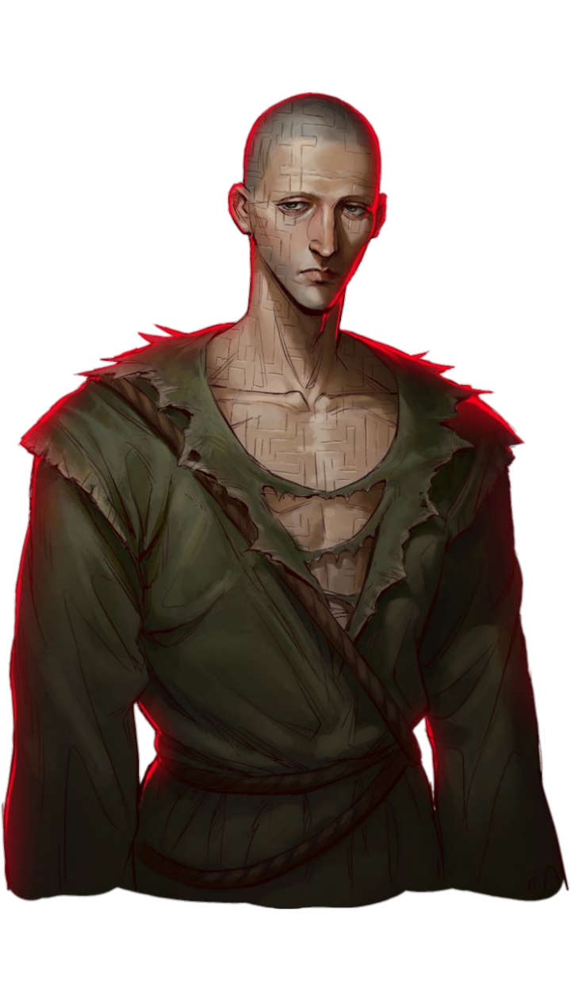
Labirinto / ?
Ninguém sabe o verdadeiro nome dele. Entre aqueles que já viram as marcas de sangue nos corredores, ele é chamado apenas de Labirinto. Não porque ele vive em um — mas porque ele é um. Labirinto é uma entidade que distorce o espaço ao redor, dobrando salas, alongando corredores e criando caminhos impossíveis. Onde ele passa, o chão racha em padrões espirais, como se o próprio mundo estivesse tentando copiá-lo… ou fugir dele. Suas linhas são irregulares, como rabiscos feitos por alguém em desespero, sempre vermelhas, sempre frescas — como se acabassem de ser traçadas com um dedo banhado em sangue. Dizem que ele não fala. Ele guia. E nunca para um lugar seguro. A presença dele não é notada pelos olhos primeiro, mas pela sensação: um arrepio de que o caminho que você acabou de passar não existia antes. Pessoas relatam escutar um arrastar suave, como um dedo riscando paredes infinitas. Quando alguém tenta seguir essas marcas, acaba perdido por horas, dias… ou encontra apenas silêncio no final.


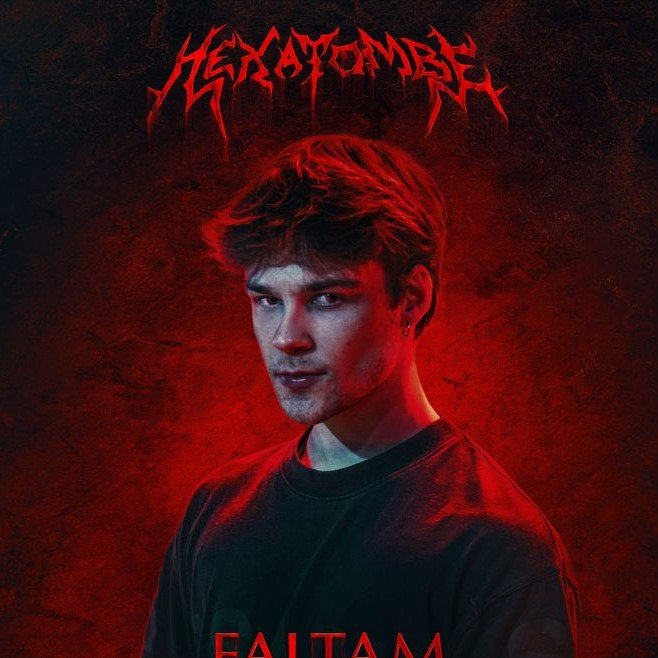
Cereal
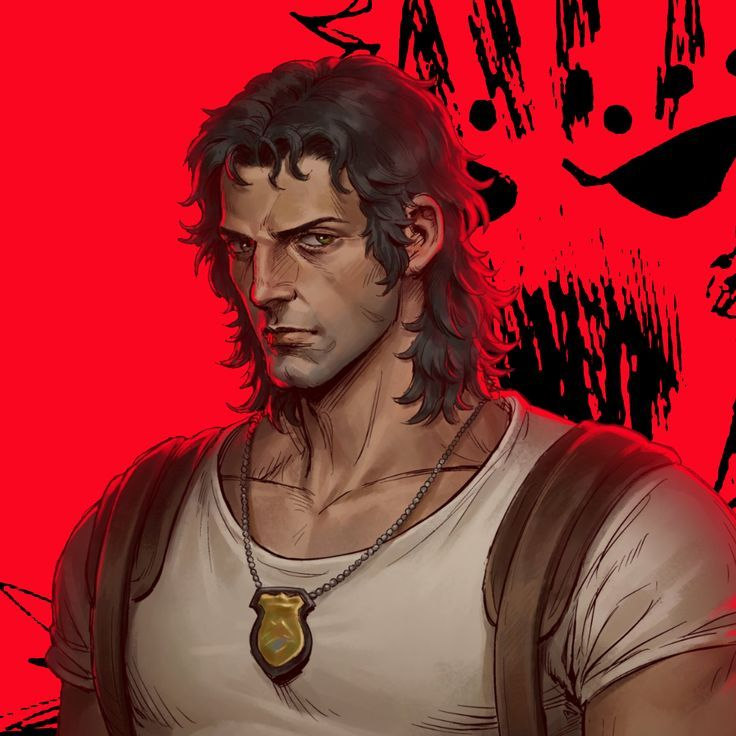
Aguiar
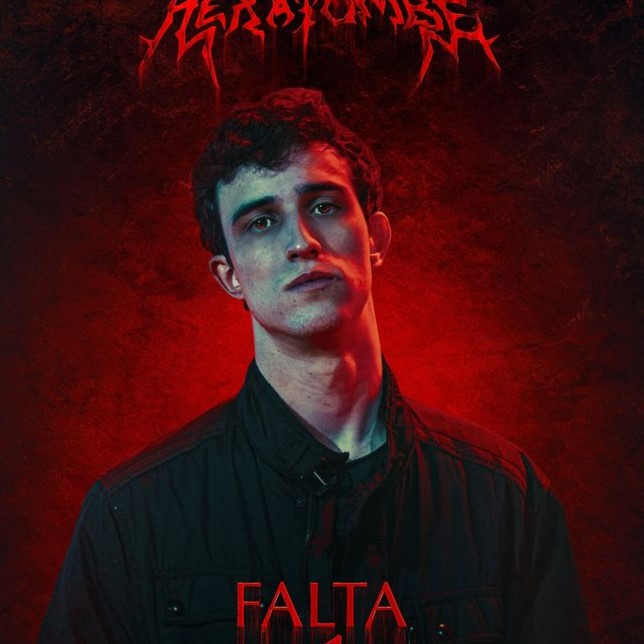
Caligrafo
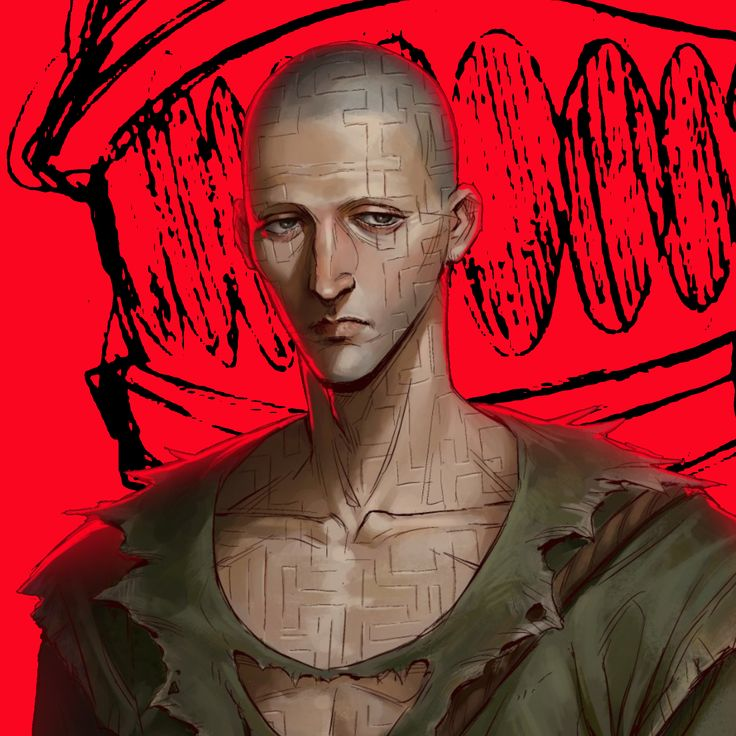
Labirinto
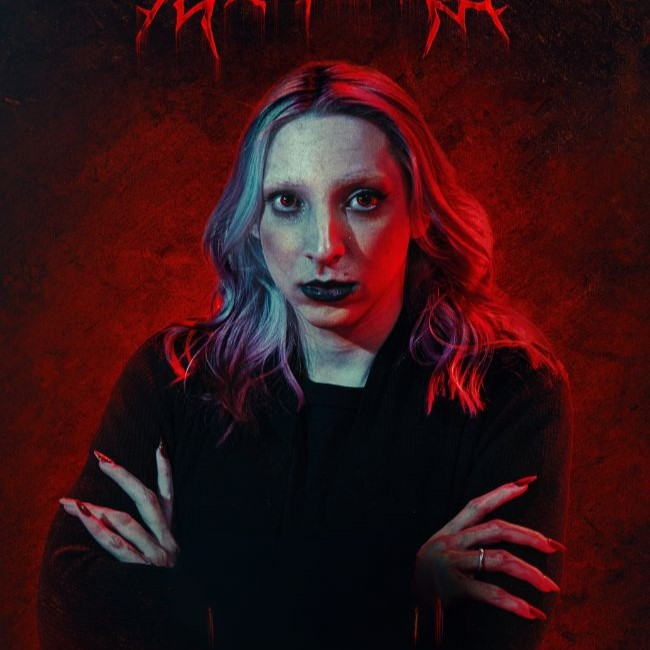
BeaMom
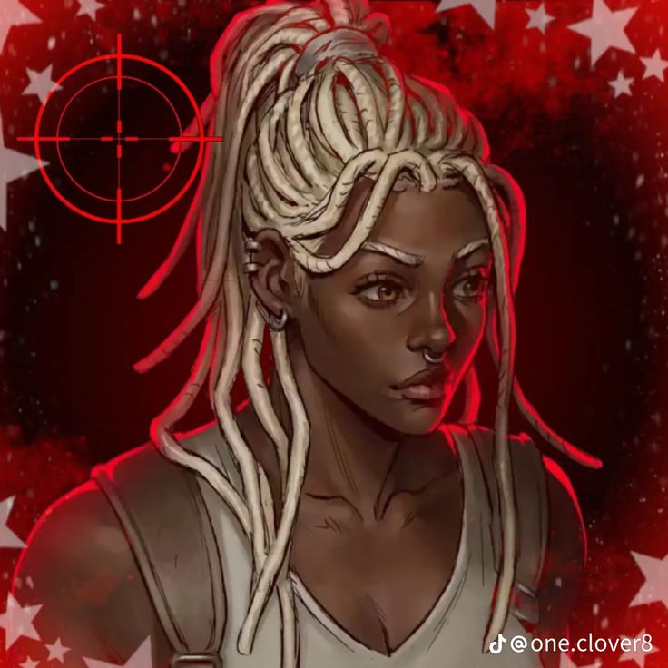
Kemi
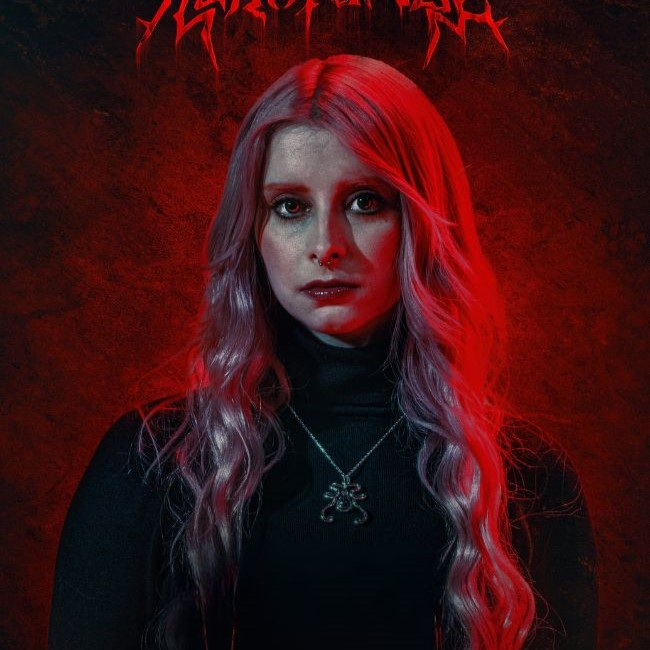
Bagi
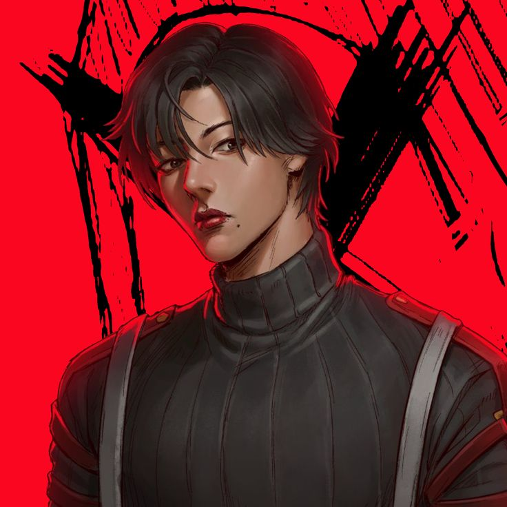
Jae-Yoon
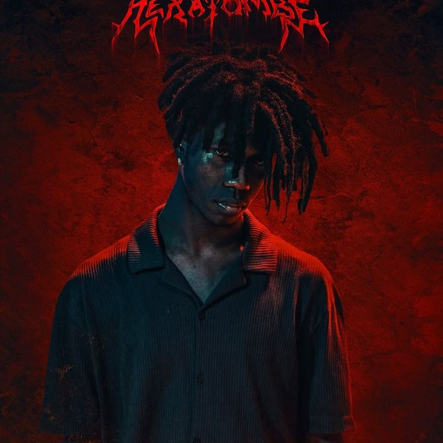
Abelha

Dalmo
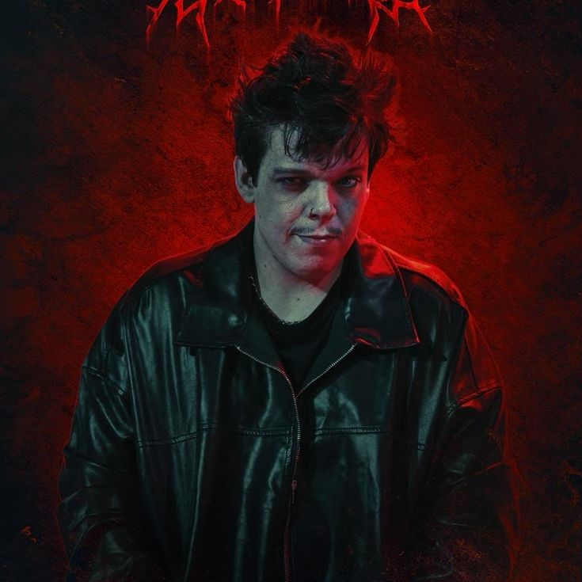
Bastet
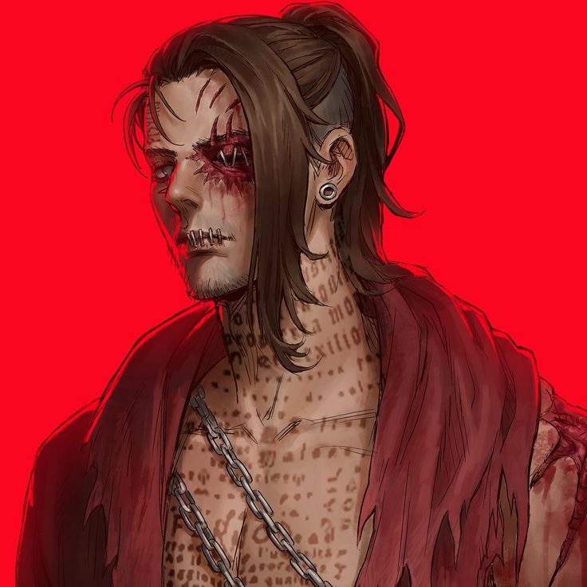